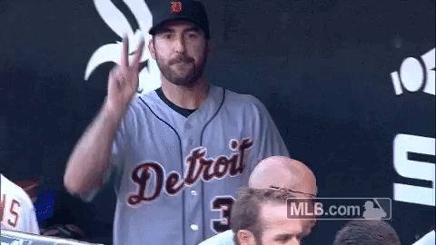
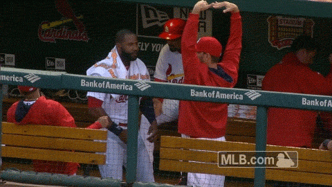
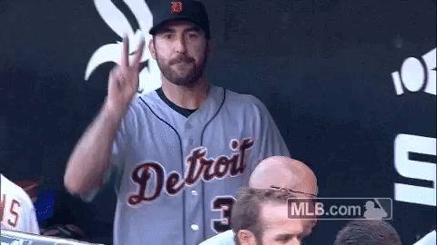
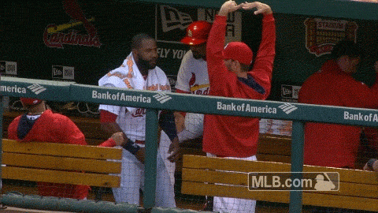

La nueva regla que ha impuesto Grandes Ligas sigue dando de qué hablar desde que se dio a conocer, siendo los verdaderos protagonistas de este deporte los más afectados. Y cuando ya son varios los peloteros que han manifestado su malestar por la regla de las bases por bolas automáticas, Brandon Moss quien se unió a os Reales de Kansas City este invierno dio su opinión sobre esta nueva polémica que se vive en Las Mayores De acuerdo con Bob Nightengale de USA TODAY Sports, el designado habló de como el beisbol perderá emoción al ver integrada esta regla:
"Es lo peor, que pasaría si es un juego 7 de la Serie Mundial, empatado y en la parte baja de la novena entrada. Alguien batea y un triple y posteriormente, viene Miguel Cabrera al Plato, ese lanzador se tiene que enfrentar a Cabrera, y si son bolas base por bolas intencionales o no, esa es una situación de nervio y ahora ya no está."
~Brandon Moss~
Hace casi una semana México era una de las selecciones más llamativas para el Clásico Mundial, pero, la baja de Khris Davis quien representaba una de sus mejores cartas a la ofensiva puso en duda su favoritismo en la justa. Sin embargo, el mismo caso pasó con Daniel Castro quien se quedará con los Rockies para afrontar esta primavera con la intención de quedar en el equipo grande. Para esto, el equipo mexicano llamó al prospecto mexicano de los Padres Luis Urías, quien hace un par de días recibió la noticia que la organización estaría pensando darle el rol de jugador de todos los días esta temporada en Grandes Ligas. Su llamado significaría una gran prueba, puesto que desde San Diego lo tomarían como una de las mayores pruebas para saber si el prospecto está listo para tal posición. Y aunque el pelotero recibió la invitación para Spring Training, el mexicano decidió abandonar a su equipo para representar a su país en el certamen que se celebrará el mes de marzo.
La final de la Serie del Caribe 2017 presenta un gran contraste entre los Criollos de Caguas y los Águilas de Mexicali, partido que se jugará el martes a partir de las 19:00 hora local en el Estadio Tomateros. Del lado de Puerto Rico, los Criollos perdieron sus primeros tres compromisos de este Clásico Caribeño al ser sobre-anotados por 14-6. Pero la tropa de Luis Matos reaccionó el sábado ante los Tigres del Licey (dominicana) al ganar por 10-2 y clasificó para la semifinal, en la que venció el lunes por 9-6 a las Águilas del Zulia (Venezuela) para avanzar a la final. El martes, los Criollos buscarán llevarse el primer título de la Serie del Caribe para Puerto Rico desde que se coronaron los Cangrejeros de Santurce en el 2000.De su parte, la representación de México lleva récord de 4-1 en este torneo, luego de blanquear a los Alazanes de Granma (Cuba) por 1-0 en la segunda semifinal del lunes. Para el país anfitrión, es su quinto año consecutivo en la final y el martes, Mexicali buscará lo que sería el quinto título de Serie del Caribe en los últimos siete años.
En el primer día del certamen el miércoles, Mexicali derrotó a Caguas por 4-2. Pero en términos de un Clásico Caribeño, eso hace mucho tiempo.
"Siempre hemos estado contra la pared", expresó Matos, refiriéndose a la habilidad de sus pupilos de remontar desventajas en las series de postemporada de la Liga de Puerto Rico y ahora en la Serie del Caribe. "No sé qué es, pero este equipo es así. Es una cosa grande cuando dices 'o ganas, o vas para la casa'. Lo han hecho todo el año".
La ofensiva de Caguas, que ha anotado 19 carreras en sus últimos dos partidos, ha sido encabezada por Iván de Jesús Jr., líder en bateo del torneo con .556, además de sus cuatro empujadas y cinco anotadas, y David Vidal, productor de cinco anotaciones y autor de tres jonrones.
En el montículo, Matos se irá con el derecho Adalberto Flores, quien el jueves contra Zulia fue víctima de dos carreras inmerecidas de un total de cuatro que permitió en 4.0 entradas al cargar con la derrota. Pero los Criollos del miércoles al viernes no se parecen en nada al grupo que se ha recuperado para avanzar hasta la final con sus dos triunfos al hilo.
"Todo está saliendo a favor del equipo de nosotros y la verdad es que tenemos que seguir con lo mismo (el lunes)", comentó Matos, quien dirige un conjunto de Caguas que irá tras su cuarto título de Serie del Caribe y primero desde 1987. "La adrenalina va a estar en high. Lo que hay que hacer es calmar esa adrenalina y usarla de la forma positiva. Todo el mundo está ready.
"Este equipo es especial y ustedes lo van a ver de vuelta (el martes). Van a ver un buen equipo que está entusiasmado de llevar un campeonato a Puerto Rico"
MEXICALI A CONTINUAR EL DOMINIO DE EQUIPOS MEXICANOS
Después de la blanqueada propinada a Cuba el lunes-que incluyó una racha de 24 bateadores de Granma retirados en forma consecutiva--el pitcheo mexicano lleva efectividad colectiva de 1.64 en sus cinco partidos del certamen, rumbo a marca de 4-1.
El martes, el manager Roberto Vizcarra enviará a la lomita de los disparos al diestro Héctor Velázquez, quien luego de ser Jugador Más Valioso de la serie final de la Liga del Pacífico en enero permitió dos carreras (una limpia) en 5.0 entradas el jueves ante el Licey, adjudicándose la victoria.
Pese a que Mexicali saldrá como favorito el martes, el equipo mexicano no da nada por hecho.
"Puerto Rico batalló y ganó los juegos necesarios para llegar hasta aquí, así que nosotros sabemos que es un equipo fuerte", dijo Agustín Murillo, quien empujó la única vuelta de la semifinal ante Cuba el lunes.
Desde el punto de vista histórico, una victoria de los Aguilas confirmaría la condición de México como potencia en Clásicos Caribeños en esta década.
"Hemos estado en finales los últimos cinco años; eso habla de la calidad de nuestro béisbol de invierno", dijo Vizcarra.
En cuanto al Mexicali se refiere, estará en busca de su segundo título, siendo el primero en 198
 


